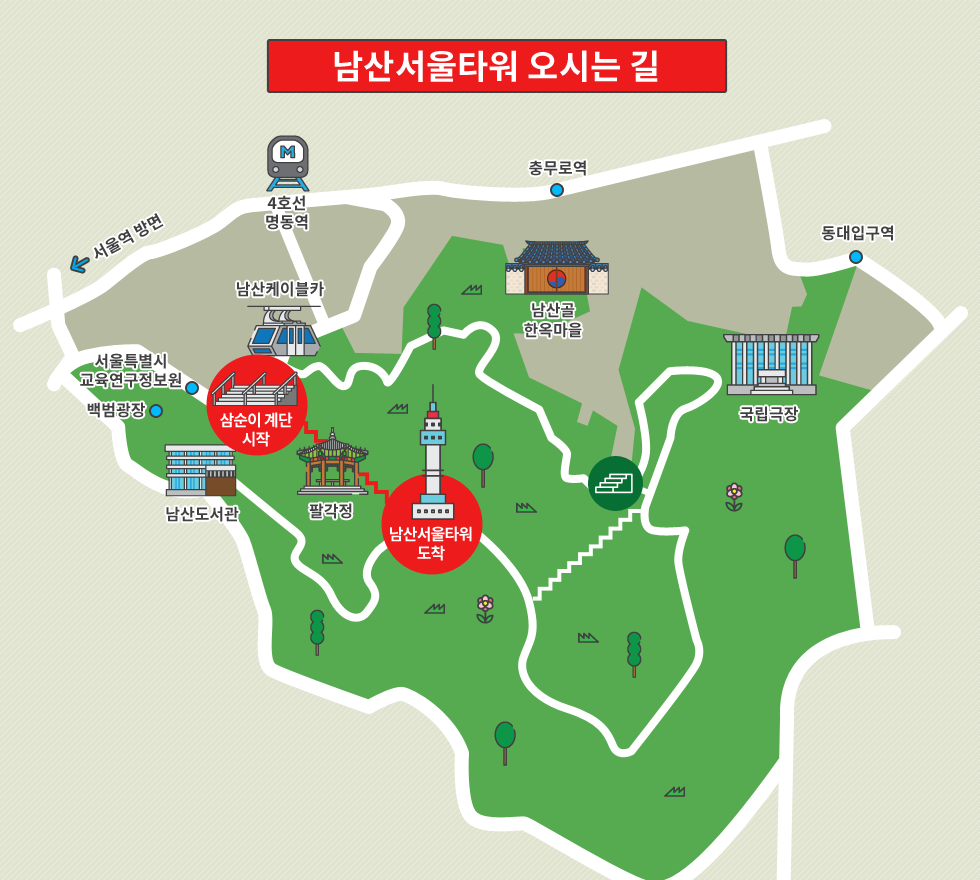
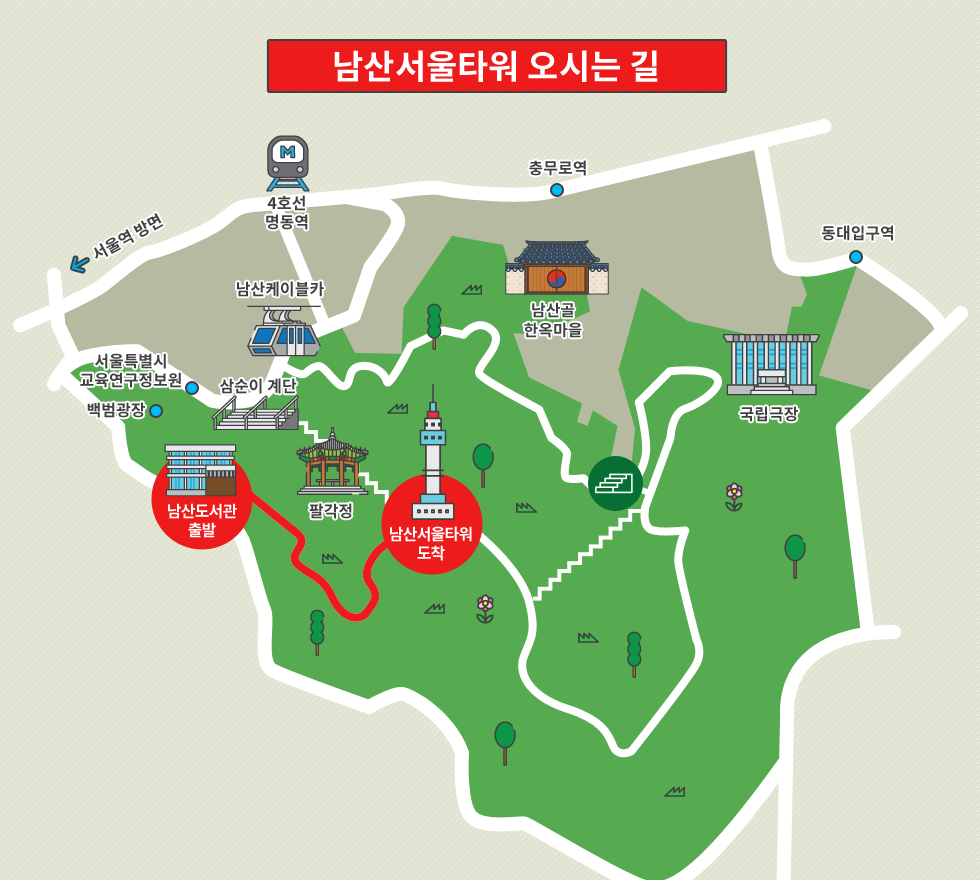
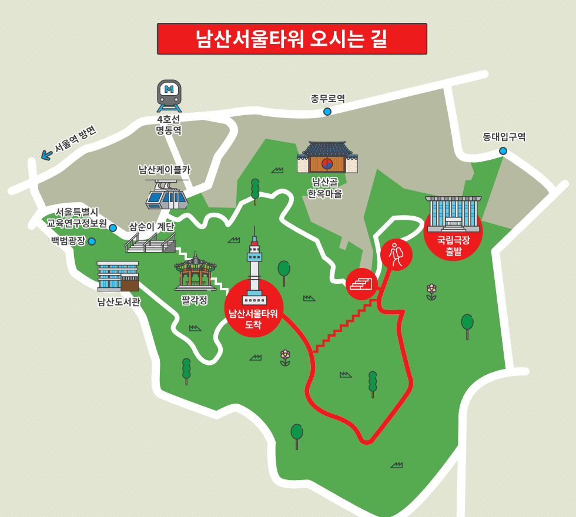

남산서울타워
남산 서울타워 소개
히스토리
브랜드 스토리
이벤트
남산 투어가이드
추천코스
테마코스
포토존
오시는 길
도보 이용안내
대중교통 이용안내
주차장 이용안내
도보 이용 안내
ㅡ
걸어서 남산서울타워까지 오시는 길
> 오시는 길 >
도보 이용안내
도보 이용안내
삼순이계단
남산도서관
국립극장

삼순이계단
드라마 ‘내 이름은 김삼순’으로 유명한 계단길(서울특별시 교육연구정보원 옆)을 이용하여 팔각정까지 걸어오는 방법
-소요시간: 약 40분

남산도서관
남산도서관 앞 남측 순환로 입구부터 걸어오는 방법
-소요시간: 약 40분

국립극장
국립극장 옆 매표소를 따라 남측 순환로를 이용하여 걸어오는 방법
-소요시간: 약 40분